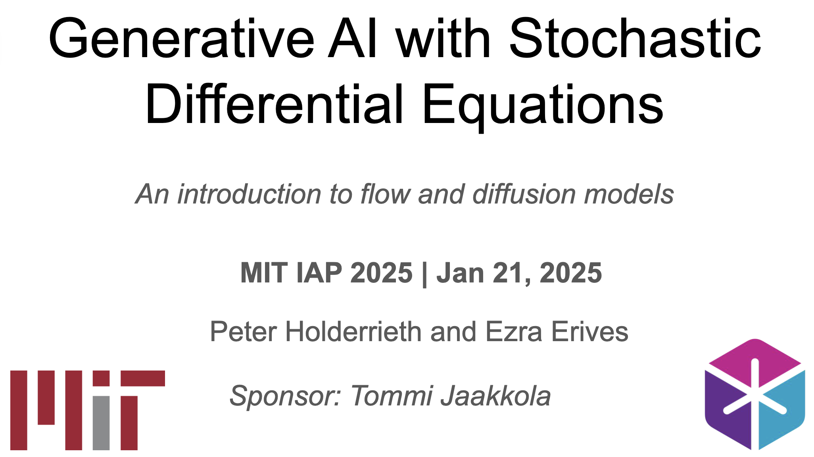

Learning from Human Gaze: Human-like Robot Social Navigation in Dense
CrowdsZhecheng Yu*,
Yan Lyu*,
Chen Yang, Tao Chen, Yishuang Zhang, Bo Ling, Peng Wang, Guanyu Gao, Weiwei Wu,
Brian Y. Lim† AAAI 2026
We introduce GazeNav, an egocentric real-world gaze-motion dataset in dense crowds, and
propose Gaze2Nav, a vision navigation framework that mimics human gaze to identify
socially salient pedestrians, achieving more human-like robot navigation.
Projects
Here are my projects built based on my interests or engineering needs.
Eye tracking and interaction in the virtual environment
Unity, Meta Quest Pro, Meta Movement SDK
2024
This project implements an egocentric virtual-world eye tracking system that supports real-time
visualization of gaze and hover (or select) behavior. Built on the Meta Quest Pro headset and
leveraging the Meta Movement SDK, it is developed in Unity and can also be integrated with XR,
enabling researchers and developers to analyze user attention and interaction patterns with
objects within immersive virtual environments.
👈 Click to play a video demo.
×
Learning Notes
Here are my learning notes compiled based on various open-source
materials and my personal understanding.

Introduction to Flow Matching and Diffusion Models
MIT Computer Science Class 6.S184: Generative AI with Stochastic Differential Equations (2025)
2025
Diffusion and flow-based models have become the state of the art for generative AI across a wide
range of data modalities, including images, videos, shapes, molecules, music, and more! This
course aims to build up the mathematical framework underlying these models from first
principles. This course is ideal
for students who want to develop a principled understanding of the theory and practice of
generative AI.
Robot Foundation Models
Physical Intelligence, NVIDIA, Qwen...
2026
This note covers the latest advances in robot foundation models, including
Vision-Language-Action (VLA) architectures and World Action Models (WAMs). They cover how
large-scale pre-training on diverse data enables generalist robot policies and methods for
improving real-world manipulation and dexterity.
{kind=link}